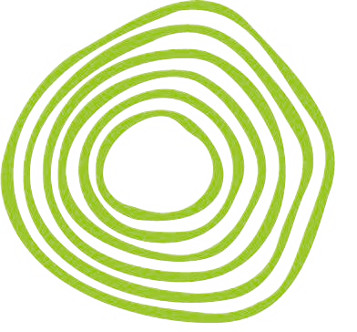
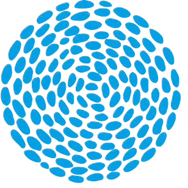
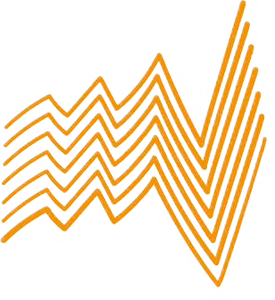

Nohaltegkeet
Responsabel mat natierleche Ressourcen ëmgoen.
GSE-Sektioun
D’GSE-Sektioun vermëttelt Wëssen, Kompetenzen a Wäerter, fir eng nohalteg Zukunft aktiv matzegestalten. Mir verbannen Natur, Technik, Wirtschaft a Gesellschaft, fir verantwortungsvoll Léisunge fir eis Ëmwelt ze entwéckelen.



Eis Missioun
Mir bilden engagéiert Jonker aus, déi d’Herausfuerderunge vun eiser Zäit verstoen a Léisunge fir eng nohalteg Entwécklung entwéckelen. Eis Ausbildung kombinéiert wëssenschaftlech Grondlagen, praktesch Erfarung an interdisziplinär Zesummenaarbecht.
Responsabel mat natierleche Ressourcen ëmgoen.
Fachwëssen a praktescht Know-how verbannen.
Am Team Léisunge fir Ëmwelt a Gesellschaft schaffen.
Schülerinnen a Schüler fir Beruffer vu muer preparéieren.
Eis Ausbildungsberäicher
Dës sechs Themen bilden de Kär vun der GSE-Ausbildung a verbannen Theorie, Praxis a Projetaarbecht.
Natur, Landwirtschaft, Ernärung a Biodiversitéit.
Méi gesinn → 💨Klima, Atmosphär, Wand an Ëmwelt.
Méi gesinn → 💧Waasser, Kreesleef, Notzung a Schutz.
Méi gesinn → ♻️Recycling, Kreeslafwirtschaft a Konsum.
Méi gesinn → 🚲Vëlo, Transport a nohaltegt Reesen.
Méi gesinn → ⚡Solar, Wand an nohalteg Technik.
Méi gesinn →Stonneplang
Hei fannt Dir d’Stonneverdeelung vun der GSE-Sektioun. De Programm besteet aus spezialiséierten, allgemengen, sproochlechen a mathematesche Fächer.
PPREN
Am PPREN léieren d’Schüler Projeten ze plangen, ëmzesetzen, ze dokumentéieren, ze presentéieren an ze reflektéieren.
Nohalteg denken. Verantwortung iwwerhuelen. Zukunft gestalten.
Bisher realiséiert Projeten
D’Projeten aus de leschte Jore weisen, wéi breet a praktesch d’GSE-Ausbildung opgebaut ass.
Wielt een Thema aus. Op der jeeweileger Säit steet déi komplett Lëscht vun de Projeten, déi spéider nach mat Fotoen, Videoen an Dokumentatioun ergänzt ka ginn.
Perspektiven
D’GSE-Sektioun bereet op d’Beruffsliewen an op héichschoulesch oder universitär Studie vir. Dobäi ginn och wichteg Kompetenze wéi wëssenschaftlecht Analyséieren, Problemléisung, Teamaarbecht, Kreativitéit, Kommunikatioun a kritescht Denken entwéckelt.
Iech d'Wëssen, d'Kompetenzen an d'Haltung mat op de Wee ze ginn, fir d'Herausfuerderunge vun haut a vu muer ze meeschteren.
Eng solid Basis fir ären Wee an d'Beruffswelt oder an héichschoulesch Studien.
ETCAS
Am ETCAS analyséieren d'Schüler konkret Ëmweltproblemer, verbannen Theorie a Praxis a schaffen un nohaltege Léisungen. D'ETCAS-Aarbecht besteet aus Virbereedung, Expert/Visite an Analyse & Reflexioun.
Problemer erkennen, Zesummenhäng verstoen an Donnéeën interpretéieren.
Betribsvisitten, Experten an Feldanalysen direkt an der Realitéit.
Nohalteg Iddien entwéckelen an dokumentéieren.